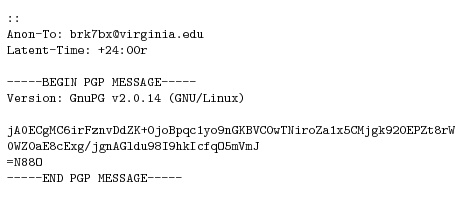

CS 3710
Introduction to Cybersecurity
Aaron Bloomfield (aaron@virginia.edu)
@github | ↑ | 
Anonymity
Source
This slide set was based, with permission, on one created by Benjamin Kreuter while at the University of Virginia in 2012. He now works for Google, and you can see his work here and here.
Introduction
Why anonymity?
- Whenever a big announcement is planned, the White House staff places a big order for pizza from a nearby pizza shop
- Journalists begin publishing speculation about the big announcement hours before it is made
- What went wrong?
(this is called the Pizza Meter, by the way)
Why anonymity?
- Suppose you are running a human rights organization in a hostile nation
- The government is probably watching your communication, so you encrypt your email
- A dissident in a nearby town sends you emails, encrypted using your public key
- Suddenly the dissident is arrested and sent to a reeducation camp
- What went wrong?
Why anonymity?
Encryption is great for preventing people from reading your messages
It does not prevent people from seeing who you correspond with, which in some cases is more important than the content of that correspondence
Receiving Messages Anonymously
- Receiving a message anonymously is easier than sending a message anonymously
- Intelligence agencies have been taking advantage of this for decades, by broadcasting instructions to covert agents using shortwave radio, which has a global range
- We can duplicate this online:
- A message may be sent to a mailing list, posted to Usenet (e.g. in alt.anonymous.messages), uploaded to a blog or wiki, etc.
Broadcasting is not Enough
- A medical doctor known for advocating medical marijuana use corresponds with his patients by broadcasting encrypted messages on Usenet and by having them do the same
- The DEA raids the doctor’s office, taking his computer and identifying the doctor’s patients
- What went wrong?
Sender Anonymity
Sender Anonymity
Protecting the identity of a sender is more technically challenging
We will not address with situations where the use of encryption or of an anonymity system must be hidden.
Overview
- Early systems - Penet
- Cypherpunks remailers
- Some theory
- Tor
- Attacking anonymity systems
- Ethical questions
Should people be required to use their real name online?
Should people be required to use their real name online?
- To use Penet, send an email requesting a pseudonym
- Mail sent to the pseudonym would be forwarded to the user’s real email address
- A user could send an email to Penet, and have the message forwarded with their pseudonym in the “From:” field
Getting a Penet anon ID
From: daemon@anon.penet.fi
To: <user questing the ID>
You have sent a message using the anonymous contact
service.
You have been allocated the code name an123456.
You can be reached anonymously using the address
an123456@anon.penet.fi.
If you want to use a nickname, please send a message to
nick@anon.penet.fi, with a Subject: field containing
your nickname.
For instructions, send a message to help@anon.penet.fi.(not a real anon ID, by the way)
The Demise of Penet
What could possibly go wrong?
The Demise of Penet
- Penet maintained a database mapping pseudonyms to email addresses; a single point of failure!
- Numerous requests for specific entries, and for the whole database, had been made while Penet was running -Penet was ultimately shut down after several legal attacks by the Church of Scientology, after secret Scientology material was posted to Usenet through Penet
- See the Wikipedia article on the Penet remailer
After Penet
Lessons learned from Penet:
- Remailer control messages should be encrypted, so that remailers can be chained. No single remailer should know both the sender and receiver of a message
- Records should not be necessary for sending anonymous messages. To receive replies records need to be kept, but should allow for messages to be encrypted and forwarded through other remailers
After Penet
Lessons learned from Penet:
- Those wishing to compromise remailers may be willing to go to great lengths, using legal or illegal means
Cypherpunks Remailers

After Penet, the next generation of remailers was built using PGP, a popular email encryption program
To use a Cypherpunks remailer, email messages encrypted, then sent to the remailer in the following format, encrypted using the remailer’s public key:
Cypherpunks Remailers
Cypherpunks remailers have a variety of directives that can be used to improve security:
- Remailers can be instructed to re-encrypt part of a message using a symmetric cipher; this is used to setting up reply chains for pseudonymous remailers like Penet
- Random padding can be added, or messages may be truncated below a certain line
Cypherpunks Remailers
Cypherpunks remailers have a variety of directives that can be used to improve security:
- Messages can rendered invalid after a certain date, or after being remailed a certain number of times.
- This helps prevent replay attacks
- The subject line can be encrypted
- Random remailer hops can be added
Cypherpunks Remailers
Despite being somewhat ad-hoc, Cypherpunks remailers remain around in some form (see https://remailer.paranoici.org/)
Some remailers provide reliability statistics, by sending test messages through known remailers
Cypherpunks remailers can be used to send messages to email addresses or to Usenet newsgroups
Anonymity Theory
- Cypherpunks remailers work well, but they provide only heuristic guarantees of security
- In particular, there is no proof that an adversary could not send specially crafted messages through a remailer to break the security model
- David Chaum proposed a more rigorous formulation of security, which imposes stricter requirements than Cypherpunks remailers
- Chaum’s solution is implemented in more advanced remailers called Mixmaster remailers
Anonymity Theory
- However, even these remailers do not provide strong security guarantees.
- In cryptography research, there is a notion of provable security
- Showing that breaking a cryptosystem’s security is at least as hard as solving a computationally difficult problem, such as the discrete logarithm problem
- Consdier ciphertext indistinguishability: “an adversary will be unable to distinguish pairs of ciphertexts based on the message they encrypt”
Anonymity Theory
- It can be shown that if the ElGamal encryption system does not satisfy a given ciphertext indistinguishability, then the discrete logarithm problem is computationally easy
- ElGamal is based on, and similar in function to, the Diffie-Hellman key exchange
- Since it is widely assumed that the discrete logarithm problem is computationally hard (for good reasons), we can conclude that ElGamal is secure against any chosen plaintext attack
Anonymity Theory
- Stronger security guarantees can also be proved
- Adaptive chosen ciphertext attacks allow the adversary to request decryptions of any ciphertext except the challenge, both before and after seeing the challenge
- Cryptosystems that are secure against such attacks are known; Cramer-Shoup is an analog of ElGamal with this property
Anonymity Theory
- We can apply this technique to the analysis of other security systems, including anonymity systems
- We need a definition of anonymity that captures our notions about security
Anonymity Theory “Notions”
- The adversary might be global - all the messages sent between nodes in the system might be observed
- The adversary might be able to take control of some of the nodes, both before and after observing messages (adaptive corruption)
- The adversary might send messages through the system, both before and after observing messages
- The adversary might be able to choose what messages are sent by honest parties
Anonymity Theory
- A rigorous definition of security for an anonymity system was given by Abe and Imai in 2003, which meets all of the above criteria
- Camenisch and Mityagin in 2006 proposed a system which meets this definition and which can be securely composed with any other protocol
- Following another rigorous definition, Danezis and Goldberg in 2008 presented Sphinx, a provably secure remailer that can be integrated with Mixmaster and Cypherpunks remailers
- So we can have a secure remailer!
Anonymity Beyond Email
- Remailers are great for high-latency communication like email
- Can we get low-latency anonymity?
- Can we browse the web anonymously?
- In 1998, researchers at the US Naval Research Laboratory released a low-latency anonymity system call Tor, which uses onion routing
Onion Routing (Tor)
Tor
- Tor stands for The Onion Router
- Consdier a path to destination S through a network:
- Y (client) <-> A <-> B <-> C <-> S (server)
- A, B, and C are randomly chosen nodes in the Tor network
- Each node has a public key \(pk_A\), \(pk_S\), etc.
- We have two functions we will use:
- \(enc(pk,X)\): encrypt \(X\) with public key \(pk\)
- \(sendTo(dest,X)\): a request to send \(X\) to destination \(dest\)
Tor Terminology
- Given path: Y (client) <-> A <-> B <-> C <-> S (server)
- A is the entry relay or a bridge
- These are generally well known and published
- B and C are just relays
- Some are well known, others are kept secret
- As for S:
- If the detination is outside of Tor, then it sends the data (via TLS) to the destination, and S is called the exit relay
- If the destination is inside of Tor, then S is the hidden service
How Tor works
- Given path: Y (client) <-> A <-> B <-> C <-> S (server)
- Given primitives: \(enc(pk,X)\) & \(sendTo(dest,X)\)
- To send \(p\) to \(S\), we construct:
- \(m_1 = enc(pk_S,p)\)
- \(m_2 = sendTo(S,m_1)\)
- \(m_3 = enc(pk_C,m_2)\)
- \(m_4 = sendTo(C,m_3)\)
- \(m_5 = enc(pk_B,m_4)\)
- \(m_6 = sendTo(B,m_5)\)
- \(m_7 = enc(pk_A,m_6)\)
- \(m_7\) is then sent by the client to entry relay \(A\)
The final message
- \(m = enc(pk_A,sendTo(B,enc(pk_B,\)
\(sendTo(\)\(C,enc(pk_C,\)
\(sendTo(S,enc(pk_S,p)))))))\) - Each successive message is encrypted, forming layers
- Layers like an onion, hence the name onion routing
- Note that the final node (\(S\)) is the final node inside Tor
- Either the exit relay or the hidden service
Tor overview
- Tor can be viewed as a chain of proxy servers, which is periodically changed to make attacks harder
- Each Tor connection goes through three (or more) nodes: the entry node, middle node(s), and exit node
- To connect to Tor, the client first downloads a list of all Tor nodes from several directory authorities
- The nodes used for connections will be selected offline, so that no information about a client’s route will be leaked
Hidden Services
- Tor also provides hidden services
- This allows a server to be run anonymously
- Each hidden service selects several middle nodes to act as “guards” (or introduction points) which are connected through additional Tor nodes to the hidden service
- Clients can look up guards for a hidden service in a distributed hash table
- Thus, the client has to route to the introduction point, and the introduction point will route to the hidden service
The Silk Road
- A Tor hidden serivce at silkroad7rn2puhj.onion
- Named after the historical trade route of the same name
- It sold illegal drugs online
- Run by the “Dread Pirate Roberts” (DPR), it was shut down in 2013
- Others quickly took its place
How was the Silk Road busted?
- Two versions (from Wikipedia)
- “The FBI has claimed that the real IP address of the Silk Road server was found via data leaked directly from the site’s CAPTCHA”
- Security researchers believe that the PHP login page was manipulated to output its server variables, including the IP address
- Ross Ulbricht, alleged to be DPR, was arrested in Oct 2, 2013
- The FBI siezed about $90 million in bitcoins
- He was sentenced to life in prison w/out parole
Tor stats
- Tor is currently the most popular anonymity system in use, with hundreds of thousands of users
- These metrics are as of November 2018 and are from https://metrics.torproject.org/:
- 653 entry relays (“bridges”)
- 6,398 (internal) relays
- About 2 million users
- 107,490 unique onion services
- Some estimates indicate that about half are inactive
How to detect Tor
- Assuming one can monitor a network link…
- If TLS encrypted data is sent to a Tor entry node, then one is likely using Tor
- Many gov’t’s (including the US) will pay “more” attention to you if it seems you are using Tor
Tor usage
- Tor is often used to defeat national firewalls; an ongoing area of work is disguising a Tor connection as a typical Firefox TLS connection
- A common pattern has emerged in such countries: Tor is typically blocked just before big announcements by the government, or immediately following news of rebellions or unrest in other countries
US gov’t policy on Tor
- Some agencies support it: US state department, NSF, and Radio Free Asia
- Some oppose it: NSA, FBI, CIA
Would you buy an Internet connected sex toy?
Would you buy an Internet connected sex toy?
- Apparently a lot of people do, but they keep getting hacked
- Security idea: have the sex toy use Tor
- This is a field of study called “onion dildonics”
- I promise that I did not make that name up…
- While the application is somewhat humorous, the privacy implications involved are very real
- Tor has been suggested as the answer to this
Tor: The Benefits
- It allows for “true” anonymity online
- It allows for much better privacy than otherwise is available
- The gov’t cannot figure out what you are saying or doing
- (Although they can tell if you are using it)
Tor: The Drawbacks
- This is how evil stuff is propogated online
- Child pornography, snuff films, torture films, rape videos, etc.
- The real stuff, not fake films done by actors for entertainment
Tor: Ethics
- Considering the benefits and drawbacks, is it ethical to use Tor?
Tor: Ethics
- Considering the benefits and drawbacks, is it ethical to use Tor?
- If you are using for ethical means (privacy, for example), then yes
- Just because a technology can be used for illegal means does not automatically make that technology unethical
- If that were the case, then all of computers would be illegal
Attacking Anonymity Systems
Attacking Remailers
- Global eavesdropping: watching all traffic through all remailers, and following one message
- This can be thwarted using random delays, random padding, and message reordering
Attacking Remailers
- Replay attacks: sending the same message through a Remailer, and seeing what comes out
- This can be thwarted with maximum date headers, assuming PGP is non-malleable (which could be untrue), and does not work against Mixmaster remailers
Attacking Remailers
- Attacking specific remailers: if the adversary has some remailers under his control, he can flood other remailers in an attempt to prevent them from being used
Attacking Remailers
- Spamming attacks: If a pseudonym delivers messages to an email address, through a chain of remailers, the chain could be traced by an attacker who sends many “spam” messages to the pseudonym
- This can be thwarted by having messages delivered to a Usenet newsgroup or by limiting how many messages can be sent before the remailer chain is changed
Attacking Remailers
- Mail loops: A pseudonym may be configured to have replies sent through several remailer chains; this could be used to create loops that exponentially increase the load on a remailer
- Typically, the amount of mail a pseudonym can receive in a given day before being disabled is deliberately limited
Attacking Tor
- Global eavesdropping: Tor does not have random delays or padding, so a global eavesdropper can defeat Tor
Attacking Tor
- Fingerprinting: a local eavesdropper can collect information about latency patterns for specific systems accessed through Tor, and check for such patterns in a target connection
- This is particularly bad in cases where some information about a person’s identity is leaked; for example, forum posts that use regional spellings or phrases
Attacking Anonymity Systems
- Malicious exit nodes: if end-to-end encryption is not used, a malicious exit can sniff usernames, passwords, and other information
Ethical Questions
- Should anonymity systems even be deployed?
- Criminals, terrorists, etc. may use anonymity systems to avoid detection or prosecution
- Anonymity systems have been used for harassing people and by child predators
- Human rights groups, political dissidents, law enforcement agencies, etc. also use anonymity systems
- In some cases, anonymity systems could save lives
Ethical Questions
- Should attacks on anonymity systems be published?
- Law enforcement agencies may be given an advantage with unpublished attacks
- Such attacks are likely to be discovered and kept secret by hostile governments, criminal hackers, etc.